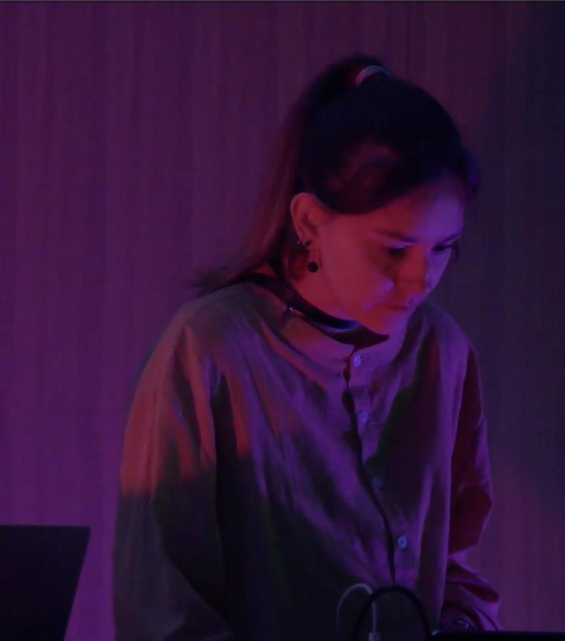
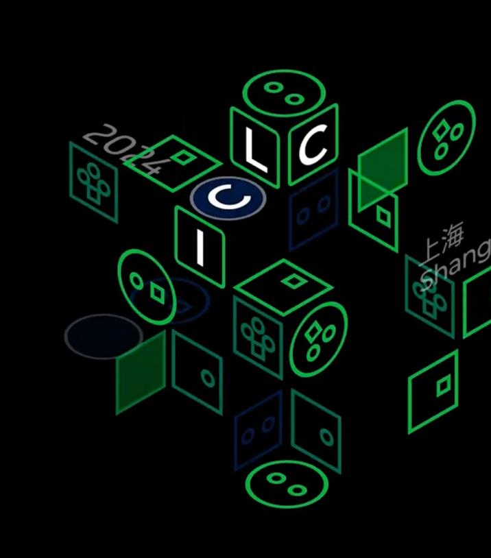
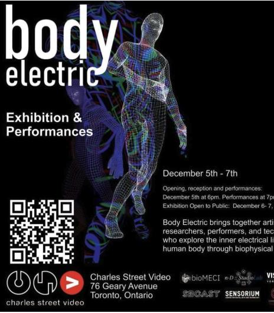
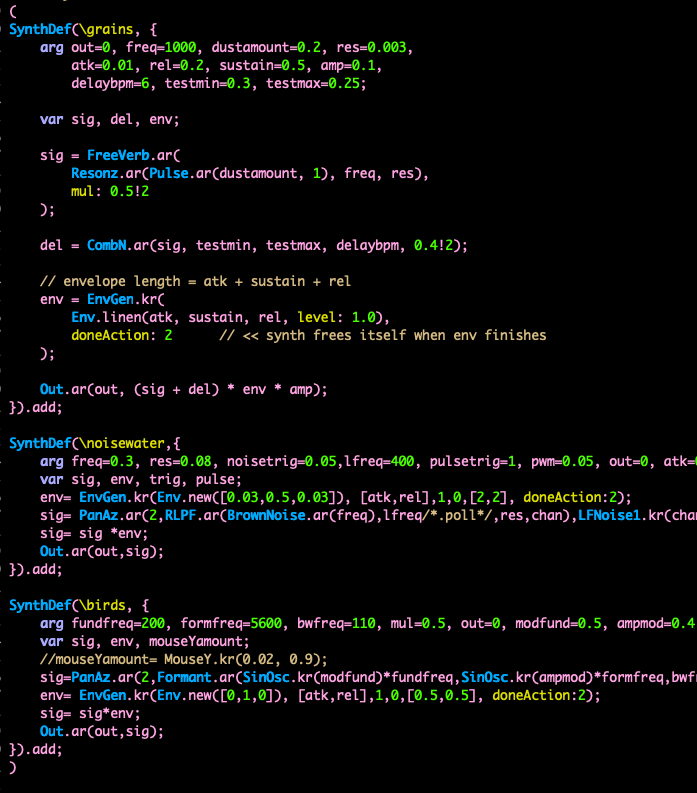
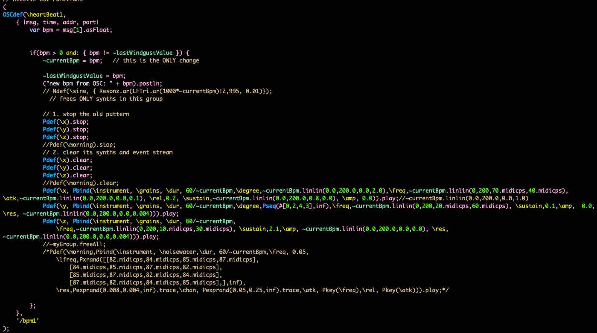

Biosensing live-coded performance · 2023–ongoing
Coiled Soma
01 / Project
Two performers’ heartbeats become interconnected with one another and with a live-coded audiovisual environment.
Coiled Soma is an ongoing collaborative live-coding project created with artist Ilze Briede, exploring the human body and its physiological rhythms as material for audiovisual performance.
My role focuses on live sound programming and composition in SuperCollider, while Briede develops the live-coded visuals in Hydra.
- Collaborators
- Hrysovalanti F. Maheras + Ilze Briede
- My role
- Sound programming and composition
- System
- SOURCE biosensing hardware, OSC, SuperCollider, Hydra





Entangled rhythms
The performers’ physiological signals become material for intimacy, vulnerability, and connection.
Live heart-rate measurements from both performers are transmitted through Open Sound Control and mapped to parameters across the sound and visual systems.
Since 2023, the project has evolved from an immersive eight-channel, four-projection BetaSpace performance to presentations at the International Conference on Live Coding at NYU Shanghai and Body Electric in 2025.